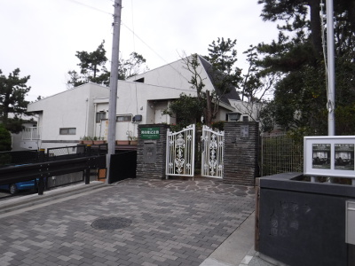
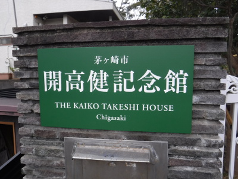
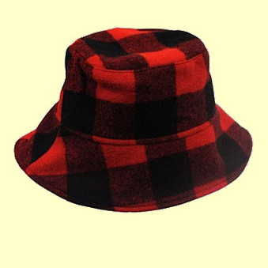
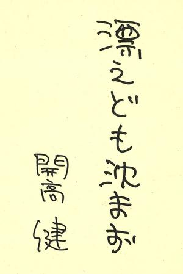

エッセイ
逢えなかった人へ 開高健記念館を訪ねて
2017年1月8日、午前6時40分。まだ暗い豊橋駅のホームを新幹線ひかり号、東京行きがすべり出す。街路灯の明かりがどんどんと後方へと過ぎ去っていく。
自由席に座った僕は、開高健著「白いページⅠ」の文庫本をデイパックから取り出して読み始める。久しぶりなので、巻頭からじっくりと読んでいこうと思い、ページをめくって行くと、経年劣化で弱くなった表紙のカバーの折り返しがちぎれて、はらりと落ちる。いったいいつ頃買った本だろうか？ カバーは色あせてしまって少し破れ目もある。本文は茶色に日焼けして、いかにも古本という雰囲気である。
何気なく裏表紙を見てみると、「豊田高専 三年 伊藤 剛」と達筆な祖父の字で裏書きがしてある。おそらくは、実家に帰省した時にこの本を持って帰り、祖父が、なくしてはいけないからと名前と学年を書いてくれたのであろう。高専の三年というと、18歳の時だから、実に36年も前に買った文庫本なのであった。高専、大学、会社員時代を経て今に至るまで、住んでいた場所も豊田市、長岡市、名古屋市、そしてニュージーランドを経て現在の豊橋市とあちこち移ったのであるが、よく失うこともなく手元にあることが不思議である。おそらくは、ニュージーランドに留学する前に実家の蔵に片付けておいたのを、何かの折にこの本一冊だけ持ち出してきたのであろう。僕の数ある開高健関連の蔵書の中から、なぜ「白いページ Ⅰ」を選んだのか、それもわからない。この本が角川文庫から出版されたのは、資料を見ると、昭和53年の９月とある。僕が高専に入学したのが昭和53年の4月だから、後述する「オーパ」を読んでから、三年生になった昭和55年頃に購入して、愛読していたのだと思われる。
「白いページ」はエッセイ集であり、文庫では、Ⅰ・Ⅱ・Ⅲと三巻までが出ている。内容は、「飲む」とか「食べる」などの動詞が冠されたエッセイが、実に幅広い内容にわたって綴られている。所々、当時の僕がボールペンで赤い線を引き、「よろし」と書き込んである。まだ若かった僕なりに、気に入った箇所に書き込みをしていたのだ。今から思えば、学校の勉強と、クラブ活動の剣道以外何も知らなかったに等しい18歳の僕が、それなりの感性で「開高健」という作家の魅力に惹かれていたのだ。
僕が生まれて初めて開高健の作品と出会ったのは、有名な「オーパ」ではなかったかと思う。あの本は、昭和53年の11月に集英社から出版されており、当時、2800円もする大型本としては珍しいヒット作（一説には10万部越え）になったと記憶している。
「発売三週間経つか経たないかのうちに三刷になった」ということが、最近見つけた資料、開高健と「夏の闇」の翻訳者、シーグル博士との往復書簡の中に、開高さんの手紙の中の言葉として述べられている。 （p126）
昭和53年の11月、僕は当時学んでいた豊田高専の校内売店「原田屋」さんに注文し、原田屋さんの丸顔の御主人が、入荷してきた「オーパ」を売店の書棚の一番上に飾っていたのを今でもはっきりと覚えている。さっそく買い込んで読んで見た「オーパ」は、その名の通り、驚きに満ちた本であった。マスタッドのトレブルフックを食いちぎるピラーニャ、黄金に輝くドラド、鱗が靴べらになると言う巨魚ピラルクー、２メートルを越える大ミミズなどなど。大型本のページをめくるたびに、絢爛な写真から驚きがこぼれ落ちた。しかし、あの頃の僕にとっては、次々と現れる大型の写真に目が奪われてしまい、精緻な釣り紀行文としての本文をじっくり味わうことができなかった、ように思われる。
「オーパ」をきっかけとして、僕は開高健の世界にどっぷりと浸り、出版される文庫本は次々と買い求めて読んでいた。「フィッシュ・オン」「私の釣魚大全」「新しい天体」等々。また、高専一年の春休みに、父親からルアーのタックル一式を豊田市の天狗堂釣り具店で買ってもらい、故郷の東栄町の川で、アマゴやカワムツを相手にルアー釣りにのめり込んだ。ルアー釣りに関して、開高健の著書からは多くのことを学んだ。キャッチ・アンド・リリースの方法、フックを研いだら親指の爪に当てて、研ぎ具合をチェックすること。ルアーを水から引き上げる直前に、８の字を描いて魚のストライクを誘うこと、などなど。この一冊から、僕のルアー釣りの世界、異国での釣りに関する憧れは大きく広がった。
高専五年となり、就職か進学かを決める時が来た。兄の助言で、愛知県豊橋市と新潟県長岡市に新しく出来ていた、技術科学大学への進学を決めた。さてどちらにするかという問題だったが、僕は迷うことなく新潟県の長岡市にある長岡技術科学大学を選んだ。何を隠そう、その頃読んでいた氏のエッセイ中の一言「我ら放す、ゆえに我ら有り」を読んでいたのだ。これは、彼が「奥只見の魚を育てる会」 の発祥、活動について詳しく書いたエッセイであり、今では何という本に収められているのかはわからないが、会の創立、放流・自然保護活動、現在の様子などが生き生きと描写されており、『そうか、新潟に行けばあんな大きな岩魚が釣れるんだ...』と無邪気にも長岡行きを決めた。
1983年4月、長岡技術科学大学の三年生へと編入した僕は、さっそく釣り同好会に入会し、先輩方に連れられて新潟の渓流釣りへとのめり込んでいった。毎週水曜日のお昼休みに、学生ホールでミーティングがあり、その週末の釣行予定を決めるのが、我が釣り同好会のしきたりとなっていた。大学に入って初めての釣行は、餌釣りで、清津峡の渓流に坂田先輩と岡田君とで出かけた。両岸を残雪に囲まれた清流で、僕は岩魚を１尾釣った。
5月の連休には、憧れの奥只見にも出かけ、春まだ遠い秘境での岩魚釣りを楽しんだ。当時の釣り同好会の主流は餌釣りであり、岡田君と僕がルアーの釣りを始めていた。
在籍していた釣り同好会は、「奥只見の魚を育てる会」の団体会員となっており、10月には北ノ岐川で前夜祭とフィッシュウォッチングが行われた。銀山平のキャンプ場で行われた前夜祭では、開高さんと親交のあった石本酒造から「越の寒梅」が一升瓶で20本ほど寄贈されており、紙コップやらアルミカップやら、しごく残念な器で銘酒を頂いた。長岡市内でも入手が難しかった越の寒梅を、浴びるほど頂いて、贅沢の極みであった。願わくば紙コップではなく、気の利いたお猪口で飲んでみたいものだと思った。
何回目かのフィッシュウォッチングの際に、有名な、「明日、世界が滅びるとしても 今日、あなたはリンゴの木を植える」という色紙を頂いたことがあった。現在、その色紙は、やはり大の開高ファンである兄の家の居間に飾ってある。
そんな折、東京の中野サンプラザにて、「奥只見の魚を育てる会」の総会が開かれることとなり、団体会員であった我が釣り同好会からも、代表が出席できることとなった。大学院生であった先輩方は研究が忙しく、三年生の僕が代表として東京へ向かった。何月だったかは覚えがないが、長岡駅から出る上越線の夜行列車、急行「佐渡号」に乗り込んだ。これから上野まで出て、そこから中野サンプラザに向かい総会へ出席するのだ。
おのぼりさんとして高層ビルをキョロキョロと眺めながら中野サンプラザへ着くと、総会に出席していたのは、事務局長の常見忠さん、開高さんが小説「夏の闇」を書くために逗留していた村杉小屋の御主人である佐藤進さん、荒沢ヒュッテの御主人、湖山荘の御主人、事務局の湯之谷村役場の観光課の方などであった。
僕は、会長である開高さんに会えるのではないかなと期待して、在学中に三回ほど総会に出席させていただいたが、とうとう開高さんには会えずじまいであった。常見さんに、
「会長さんは見えませんかねぇ？」
と伺うと、小説の執筆で忙しくしている、とのことであった。
大学在学中も、開高さんの本が出るたびに購入し、熱心に読んでいた。氏のエッセイや評論は、僕にとって最良のブックガイドであり、映画鑑賞ガイドであった。Ｃ・Ｗ・ニコル氏の小説「勇魚」、ジョージ・オーウェル「1984年」、井伏鱒二さんなどの著作を、芋づる式に読みあさった。寮の小部屋の本棚は、開高さんと、ゆかりの著者の本で占められていた。
1989年4月、大学院を卒業して、名古屋の建設コンサルティング会社に就職した僕は、念願だった河川関係の仕事をもらい、目が回るほど忙しいながらも充実した日々を送っていた。
1989年12月9日の夕刻、仕事を終えて地下鉄のホームへ降りて行くと、売店に並んだスポーツ新聞で、開高さんが亡くなったことを知った。僕は自宅に帰るのをやめ、繁華街である名古屋栄のショットバーへ向かい、独りウィスキーのグラスを傾け、今は亡き小説家に向かって黙祷した。ウィスキーにせよ、ワインにせよ、日本酒にせよ、酒は、歯茎で味わうのだと言うことを教わったのも、開高さんのエッセイの中からであった。
豊橋発のひかり号を新横浜で下車し、横浜経由で茅ヶ崎駅へ着いたのは9時過ぎであった。目指す開高健記念館の開館は10時であるので、時間はある。印刷したGoogleマップでは、住宅地の中の路地を抜けて行く最短コースが推奨されていたが、迷っては困るので、急がば回れと広い車道を選んで歩く。ラチエン通りを海岸に向けて歩いて行くと、案内の看板が出ていた。茅ヶ崎駅から30分ほど歩いたところに開高健記念館というコミュニティバスの停留所があり、そこから少し奥まった方に記念館の門が見えた。

開館まではまだ少し時間があったので、門の脇に立ち、石版に彫られた、開高健、牧羊子の表札を見てしばし感慨にふけりながら「白いページⅠ」の続きを読む。9時50分頃に、隣の「茅ヶ崎ゆかりの人物館」の係員の人が現れ、
「もう開きますからどうぞ」
と声を掛けてくれた。
「ありがとうございます。今日は開高記念館の方へまいりました。」
と御礼を述べて、開館を待つ。スタッフの方だろうか、外周の庭を掃除している人が見えた。

いよいよ10時となり、門を開けて玄関へと向かう。邸宅を一周している「哲学者の小径」から現れたスタッフさんが、玄関を開けてくれた。中に入ると、別のスタッフの女性が僕のかぶっている帽子を見て、
「開高さんのかぶってらした帽子みたいですね」
と褒めてくれた。僕のお気に入りの帽子なので、とても嬉しかった。

{kind=link}
玄関を入るとすぐに大きなホールになっており、高い天井のそばには、大きく引き伸ばされた開高さんのパネルが何枚も飾ってある。開高さんはここで暮らしていたのか！と、ひとしお大きな感動が押し寄せてきた。ベトナムで撮した「遺影」もあった。数々の直筆原稿や著作、ビデオの資料も閲覧できるようになっており、画面からは、テレビやビデオでおなじみの懐かしい開高さんの声が聞こえてきた。ＮＨＫで放送された「この人に逢いたい」という番組の録画のようであった。ディスプレイの後ろには、これまでに開催された企画展のポスターが貼られていた。文学、釣り、茅ヶ崎での生活など、開高さんのファンであればだれでも観たくなるようなテーマばかりである。
順路に沿って次の部屋に入ると、氏の著作や蔵書、ワインのコレクションなどが飾ってあり、そこを抜けると、主無き書斎がガラス越しに見えるようになっている。大きな机と座椅子、著書・参考文献・辞書。時計、ラジオ、電話、電気スタンド。壁には釣り上げたマスキー、キングサーモン、ピラーニャなどの剥製、そしてルアーの数々。この部屋で、幾多の傑作が生み出されてきたのかと思うと、実に感慨深いものがあった。と同時に、白い原稿用紙に向かい、信じられないような粘着力と努力とで、無から有を生み出す孤独な闘いの日々のことを想うと、『苦しかっただろうなぁ....』とこみ上げてくるものがあった。あれだけ無理をすれば、バック・ペインに悩まされるようになったとしても不思議ではない。
今そこに小説家が原稿を書いていたら、なんと言って声をかけただろうか？ 声はかけられなかっただろうか？ 今年は2017年だから、1930年に生まれた彼は、ご存命であれば87歳になられる。
書斎の前を離れて、庭を巡る「哲学者の小径」を一回りし、サンルームに戻ってくると、机の上に司馬遼太郎さんの弔辞がファイルして置かれていた。それを読むと、大いなる才能を失ったことへの司馬さんの悲しみが切々と伝わってきた。また、来館者のメッセージノートも置かれており、様々な年代のファンがここにやってきたことがわかった。
「いろいろな意味で私の人生を変えてくれた開高さんの仕事場を見ることができ、本当に幸せな一日になりました。（2017.1.8 T・I）」
と、感想を記しておいた。そう、もし私の体から、開高健という縫い糸を抜いてしまったら、私の体はハラハラと地面に崩れ落ちてしまうことだろう。もちろん釣りはしていただろうが、ルアー釣りの奥深さや精妙さ、釣りの裏側に隠された人生の哀しみを知ることも無かっただろう。また外国への憧れもやはり無かっただろうと思われる。ニュージーランドでの釣りを知り、彼の地へ移住しようと決心して留学することも無かっただろう。このウェブサイトの中にも、様々な影響が見て取れる。また、ジョークを覚えてそれを適切なタイミングで披露する、ということも開高さんに教わった。ワイカト大学の同窓生、ジム・バノンさんの前で、「最良の人生、最悪の人生」というジョークを言って、バカウケしたこともよく覚えている。
私の人生の節目節目で、それまでに蓄積されていた開高健の影響が、私という小さな人間の人生を縫い上げてきたのだ。
記念館の展示を見終わり、みやげに「開高健の世界」、「ごぞんじ開高健Ⅴ」、ＣＤブック、金色のスプーン「バイト」の12g、絵葉書などを買い込んで玄関を出た。ラチエン通りから振り返ると、１月の薄い日差しの中、記念館はひっそりと佇んでいた。

開高さん、ありがとうございました。今日はあなたに逢えたようで嬉しかったです。天国でお幸せに暮らしてください。僕もいつか、そちらの岸辺に行ったら、ニュージーランドの無垢な鱒たちの棲む川や湖をご案内させていただきます。合掌。
追補
帰宅後、開高さんの講演会の様子を録音したＣＤ、「足で考え、耳で書く／雨の日には釣り竿を磨きながら」を聴いていたら、「作家とファンは会わない方が良い」という一言があった。一度会ってしまうと、次に作品と向き合う時に、その作家の顔がチラチラして困る。とのことだった。
エッセイ 目次へ
サイトマップ
ホームへ
お問い合わせ